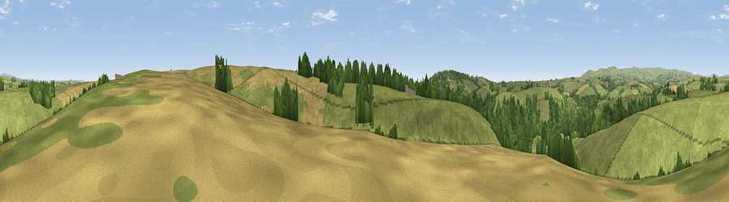

Viewpoint near Diptford
#25717 in England · top 56% of its area beats it · near DiptfordThe view, rendered

A 360° render of this exact spot computed from the terrain model, tree cover and land cover — summer colours, afternoon light, calibrated against photographs of famous viewpoints. Real trees, hedges and buildings will differ in detail.
The panorama
Grey silhouette: terrain skyline in each direction (720 bearings, Earth curvature and refraction included). Dashed green: skyline with trees (+15 m) and buildings (+8 m) as obstacles. Blue strip: how far the ground is visible on each bearing.
Where the view opens
Wedge length = distance to the farthest visible ground on that bearing (vegetation-aware). Rings at 10, 25 and 50 km.
What fills the view
75% grassland · 15% woodland · 10% cropland
Angular shares of the visible panorama (visual magnitude), not map area. Landscape diversity 0.32 (0–1 Shannon).
Key numbers
More beautiful places nearby
The staircase of upgrades: each row has a higher view potential than everything closer. Driving times are estimates from straight-line distance, calibrated against real road routing — check an actual route before setting out.
| Place | Direction | Drive | Score |
|---|---|---|---|
| Viewpoint near Diptford | NE · 1 km | ~3 min | 49.3 |
| Viewpoint near Moreleigh | SSE · 2 km | ~6 min | 69.3 |
| Viewpoint near Moreleigh | E · 2 km | ~6 min | 74.0 |
| Brent Hill | NNW · 8 km | ~16 min | 79.3 |
| Ugborough Beacon | WNW · 8 km | ~17 min | 79.5 |
| Western Beacon | WNW · 9 km | ~18 min | 81.9 |
| Beacon Hill | NE · 14 km | ~25 min | 82.3 |
| Viewpoint near Hope | SSW · 17 km | ~29 min | 84.4 |
50.37617, -3.77440 · source: screening · position refined by local search. Computed location — check access rights before visiting.